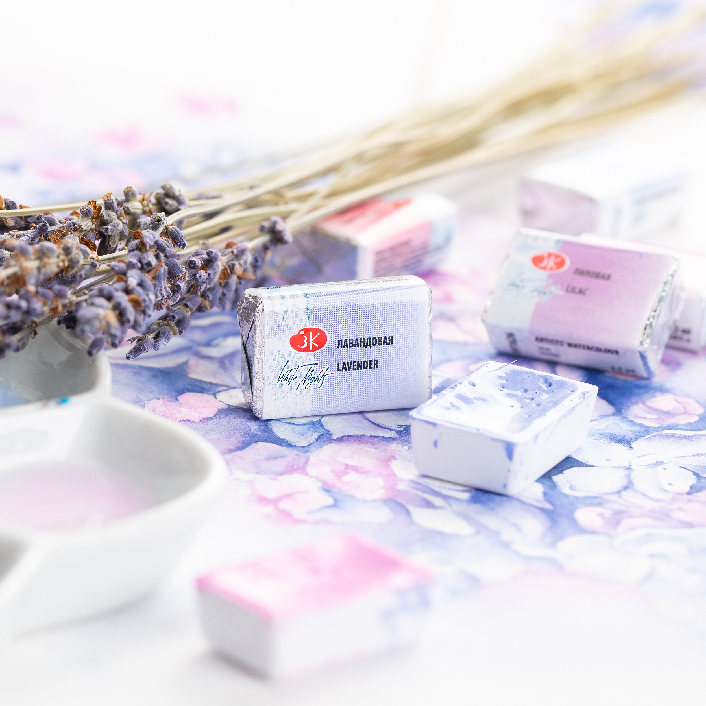

Новые 9 пастельных цветов в линейке "Белых ночей"

О них говорили художники, тайно шептались продавцы в художественных магазинах... То были слухи, а теперь, осенью 2019 года, это уже реальность! Их можно приобрести в художественных магазинах. Приготовьтесь к 9 новым цветам акварели "Белые ночи", которые расширяют возможности акварелистов! Открываем новые возможности для реализации любых творческих задумок.
Все цвета *** светостойкие.
Укрывистые.
Среднеустойчивые к смыванию.
Лиловая (P.V.19, P.W.6)
Розовый пион (P.R.122, P.W.6)
Коралловая (P.R.242, P.W.6)
Розовый кварц (P.R.170, P.W.6)
Лавандовая (P.V.15, P.B. 29, P.W.6)
Королевская голубая (P.B. 29, P.W.6)
Дюны (P.Y.42, P.Br.6, P.Bk.7, P.W.6)
Персиковая (P.Y.3, P.O.64, P.W.6)
Мятная (P.G.7, P.W.6)